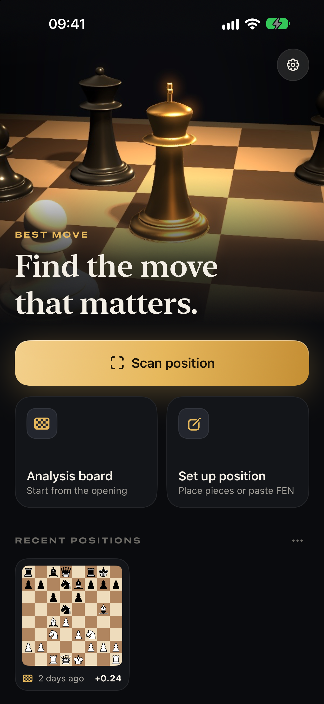
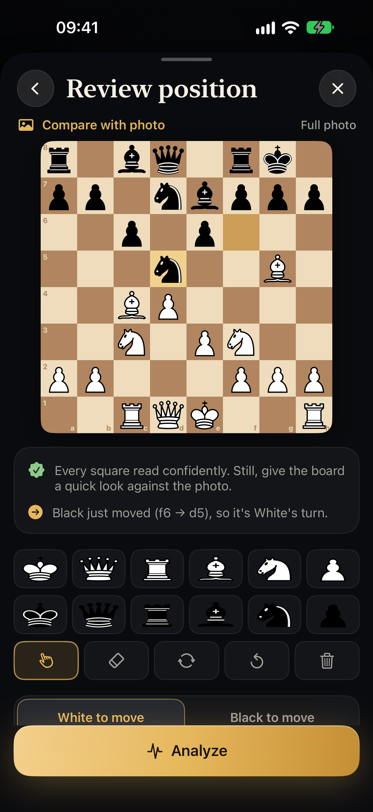
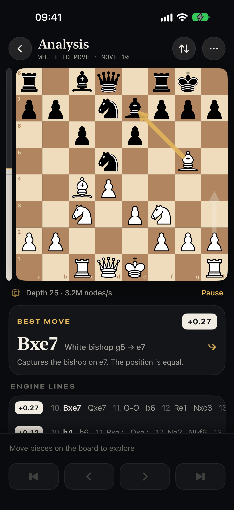

Best Move
Chess scanner for iPhone
Point your camera at a chess board on any screen, or import a screenshot. Best Move reads the position and whose turn it is, then shows the best move. The Stockfish engine runs on your iPhone, fully offline.



Support
Found a position it reads wrongly, or something not working? Please open an issue on GitHub. A screenshot of the board helps a lot.
Questions
How do I get the best recognition?
Fill most of the frame with the board, keep it roughly square to the camera and avoid glare. Screenshots work best of all. Squares the app is unsure about are outlined on the review screen, and you can fix any piece by tapping it.
How does it know whose move it is?
From the last-move highlight that most chess sites and apps show, or from a check. If neither is visible, you choose the side to move on the review screen. You can always switch it before analysing.
Does it work with a real wooden board?
Not yet. Recognition is built for boards on screens: chess sites and apps, books and diagrams on a monitor or phone.
Does it need an internet connection?
No. Recognition and analysis both run on your iPhone. Nothing is uploaded.
Which devices are supported?
iPhone with iOS 17 or later. Newer iPhones analyse faster.
Privacy
Best Move collects no data. Read the privacy policy.
Open source
Best Move is free software under the GNU General Public License v3, because it includes the Stockfish chess engine. The complete source code is at github.com/ConstantinSchreiber/chess-move-analysis.